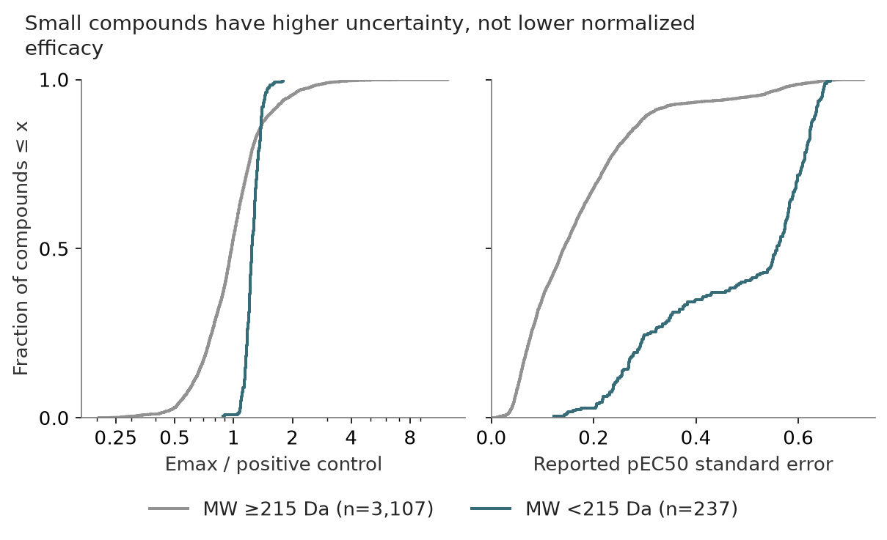

Emax and uncertainty: testing the biological explanation
Status: completed · Synthesis updated 2026-09-08. Original dates and immutable protocol history remain in the source evidence.
Question
Are small molecules overcalled because they bind without activating PXR?

PNG · SVG · Plotted data · Figure provenance
{kind=link}
{kind=link}
Design and fitted/frozen flow
Exact 3,344 development IDs → provider Emax/SE fields + saved native/adapted predictions → MW strata and descriptive adjustments. No model inference or predictive fitting.
Results
Below215 versus larger: normalized Emax medians 1.240 vs 0.977; raw log2 fold-change Emax 2.17 vs 2.53; pEC50 SE 0.558 vs 0.141. All 237 small compounds pass normalized Emax ≥0.6 qualification.
Implication and limits
The proposed low normalized efficacy explanation is weakened, not established. Higher fit uncertainty is associated with size/potency, but neither scalar affinity nor low pEC50 proves binding without activation. Raw curves, control denominator and parameter covariance are unavailable; the adapter is not shown to learn efficacy.
All evidence is retrospective. Historical budgets, splits and raw versus uncertainty-weighted scores must remain distinct.
Source evidence
Original reports and exact tables (historical report links may refer to unbundled files).
- experiments/20260908_PXR-MW-efficacy-diagnostic/README.md
- experiments/20260908_PXR-MW-efficacy-diagnostic/artifacts/stratum_summaries.csv
- experiments/20260908_PXR-MW-efficacy-diagnostic/artifacts/merged_compounds.csv
- experiments/20260908_PXR-MW-efficacy-diagnostic/artifacts/native_score_outcomes.png
- experiments/20260908_PXR-MW-efficacy-diagnostic/artifacts/mw_emax_uncertainty.png
- experiments/20260908_PXR-MW-efficacy-diagnostic/documentation/provider_dataset_card.md
{kind=link}
{kind=link}